Chapter 4 · Part 1 — Henry
as held out her .
Oh, brother. was always trying to with animals. But was going too far.
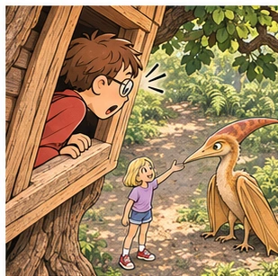
“Don’t get too to him, !” .
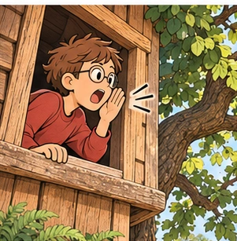
But touched the ’s . stroked his neck. was to him.
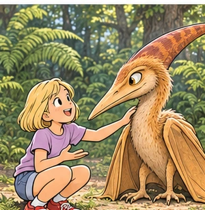
What in the was saying?
took a deep . Okay. would go down, too. would be good to the . Take notes. Like a scientist.
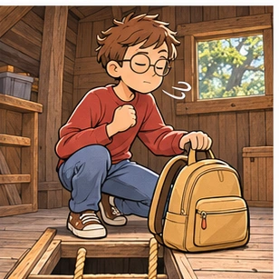
started down the ladder.
When got to the ground, was a few feet away from the .
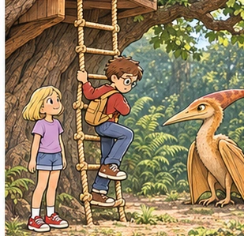
The at . His were bright alert.
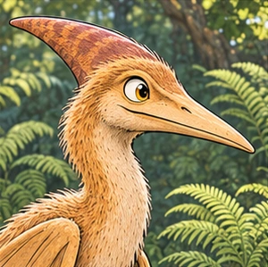
“’s soft, ,” . “ feels like Henry.”
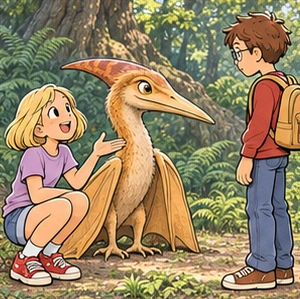
snorted. “’s dog, .”
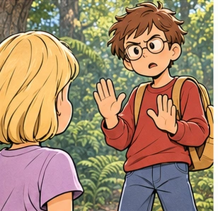
“Feel him, ,” .
didn’t move.
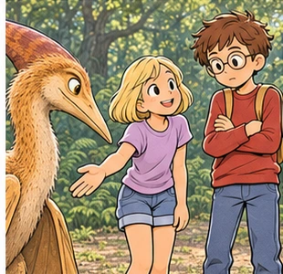
“Don’t think, . Just do .”
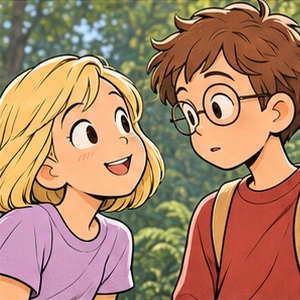
stepped forward. put out his arm. Very . brushed his down the ’s neck.
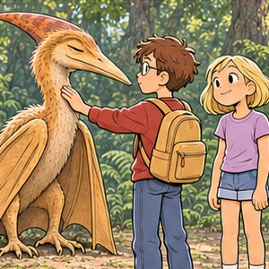
Interesting. A thin layer of covered the ’s skin.
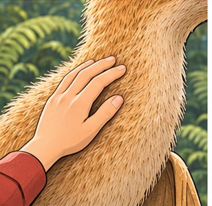
“Soft, huh?” .
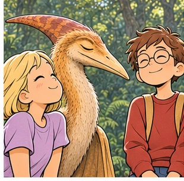
reached into his backpack pulled out a pencil a . wrote:
“What are doing?” .
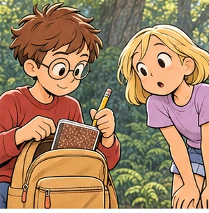
“Taking notes,” . “We’re probably the first people in the whole to ever a real live .”
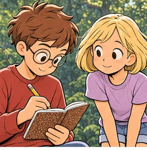
at the again. The had a bony on top of his head. The was longer than ’s arm.
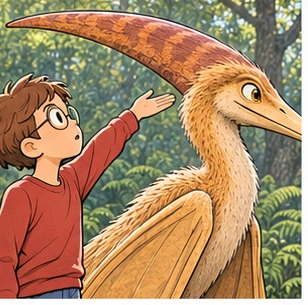
“I wonder smart is,” .
“Very smart,” .
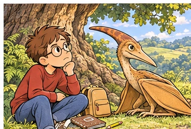
“Don’t count on ,” . “His ’s probably bigger than a bean.”
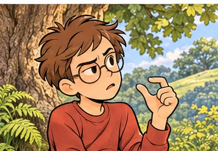
“, ’s very smart. I can feel ,” . “I’m going to call him Henry.”
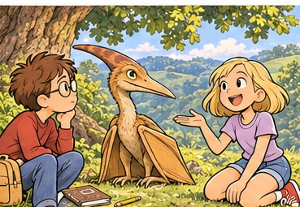
wrote in his :
at the again. “Maybe ’s a mutant,” .
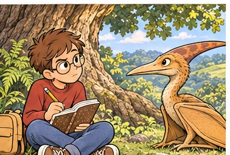
The tilted his head.
laughed. “’s mutant, .”
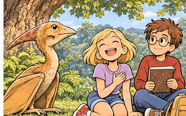
“Well, what’s doing here then? is place?” .
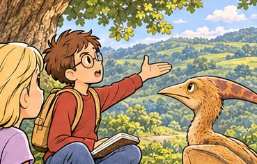
leaned to the .
“Do know we are, Henry?” softly.
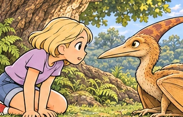
The fixed his on . His long jaws were opening closing. Like a giant pair of scissors.
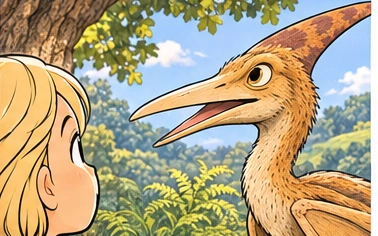
“Are trying to talk to me, Henry?” .
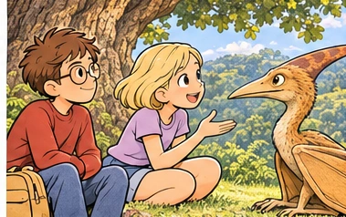
“ , .” wrote in his :
“Did we come to a time long ago, Henry?” . “Is a place from long ago?” Suddenly . “!”
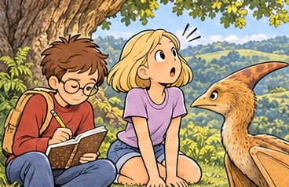
.
was pointing toward the hill. On top stood a dinosaur!
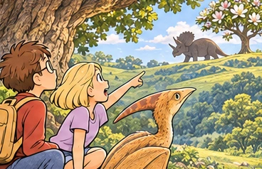